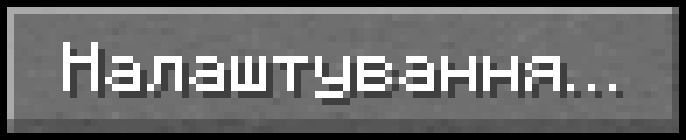
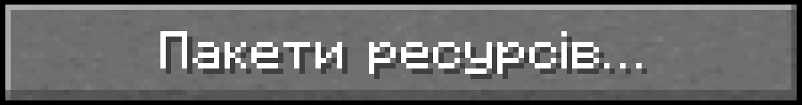
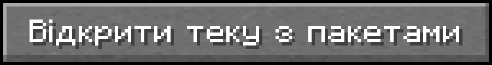

Ресурспак для евенту ДЦЦ - це ресурспак для евенту ДЦЦ на СК.
Нижче є більше інформації про цей ресурспак.
(ДЦЦ - Дивовижний Цифровий Цирк)
Скріншот з контентом доданим ресурспаком:
README.md, опис ресурспаку:
README.md
Це ресурспак для евенту по Дивовижному Цифровому Цирку на Славкрафті
Творці ресурспаку
Ресурспак: slavchik (youtube: https://www.youtube.com/@Priklyucheniya_Slavy) + деякі речі для ресурспака були взяті з ресурспаку Scar's "Big Hat" (https://www.planetminecraft.com/texture-pack/scar-s-big-hat) + деякі речі для ресурспака були взяті з ресурспаку створеним 11_ArtemPR_22 на сайті vanillatweaks (https://vanillatweaks.net/picker/resource-packs).
Для чого ресурпак?Цей ресурспак створений для евенту на СК по дивовижному цифровому цирку.
Контент доданий ресурспаком- Капелюх Кейна замість вирізаного гарбуза.
- Палка Кейна замість стержня блейза.
- Слайми та вся інша слиз - синя.
Як устоновити ресурпак? (всі OS)
- Відкрийте Minecraft.
- Натисніть на кнопку .
- Натисніть на кнопку .
- Натисніть на кнопку .
- Не зачиняйте відкрийте вікно.
-
Завантажте ресурспак кнопкою нижче (
 ), чи тут.
), чи тут.
- Розархівуйте завантажений архів.
- З архіву перетягніть теку "ресурспак для евенту ДЦЦ" до відркитої теки раніше.
Що таке ДЦЦ (Дивовижний Цифровий Цирк)?
ДЦЦ (Дивовижний Цифровый Цирк) (англ. the Amazing Digital Circus) - австралійський мультсеріал від незалежної інді студії Glitch. ДЦЦ виходить на ютуб каналі GLITCH. ДЦЦ збирає велику популярність. ДЦЦ має поки тільки пілот, але скоріше за всього через деякий він почне випускати інші серії.
Завантажити ресурспак: